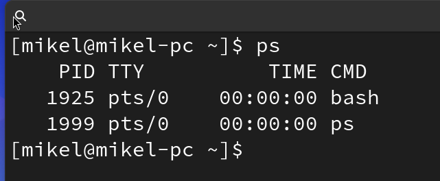
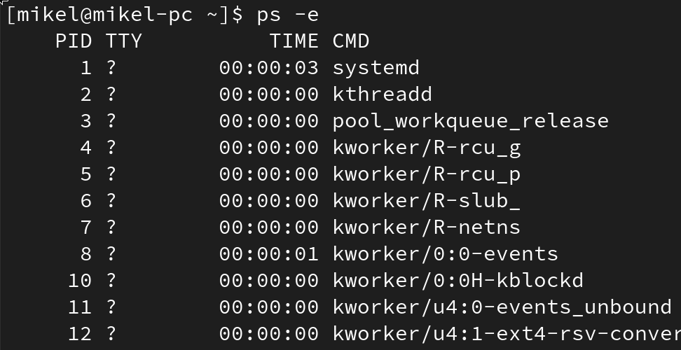
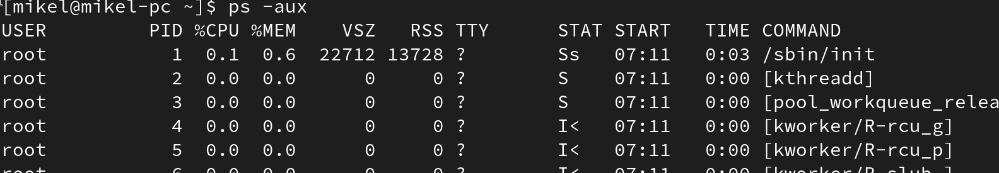
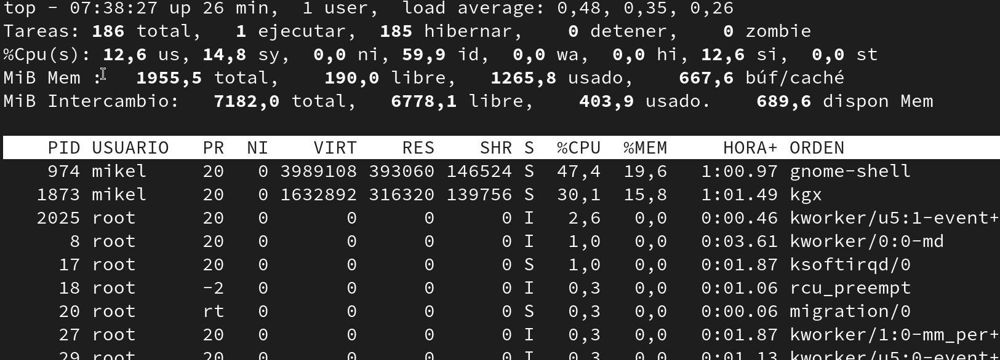
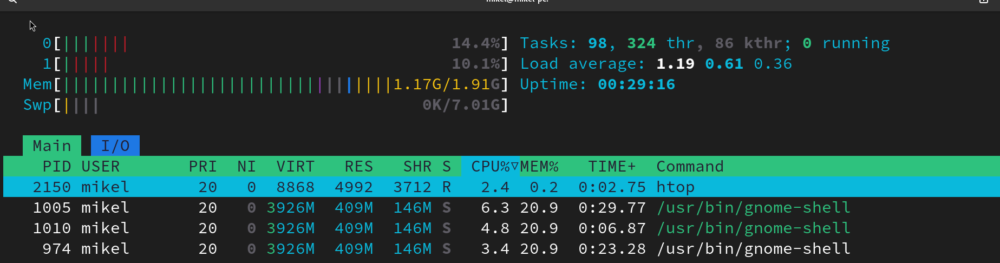

Prozesu kudeaketa Linuxen
Zer dira prosezuak Sistema Eragile baten
Prosezuak ordenagailuan martxan daduden programak dira, memoria eta prosezagailu denbora erabiltzen dute.
Prosezuak bistaratu
Process Status
ps

ps -e

ps -aux

TOP Table of processes agindua, prosezuak bistaratzeko balio duen agindua da.
top

htop

Prosezuak kudeatu
killid id
Prosezu kudeaketa windowsen (erakuspena klasen)
- Erakutsi Ataza Kudeatzailea eta nola hemen ikusten dire prosezuak, erabiltzen duten memoria eta prosezamendu portzentaila
- Zabaldu photoshop (irudi haundi bat 4milloi pixelekoa edo)
- Ikusi memoriaren erabileraren aldaketa
- Erabili photshopeko trensaren bat, adibidez atzamarra erakusteko nola prosezamendu kopurua igotzen dens